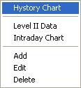
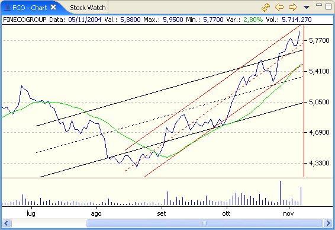
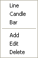
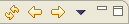
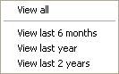

The Historical Chart is shown using the menu that is opened with a righ-click on the Stock Watch window.

The window is split in zones each of which is capable of drawing one or more charts or indicators. The default setting will draw the closing price chart on the upper zone and the exchange volume on the lower zone.

A right-click on the chart will open a menu from which is will be possible to select how the charts and technical indicators are drawn.

The window's toolbar allows you to update the chart with the latest quotes from the selected data source, show the previous or next chart in the order of which they were added to the Stock Watch window, and select the period to display.

The down-arrow button will open a menu from which it will be possible to select the period to display.

The calculations for the technical analisys indicators are made only on the portion of data selected from this menu.